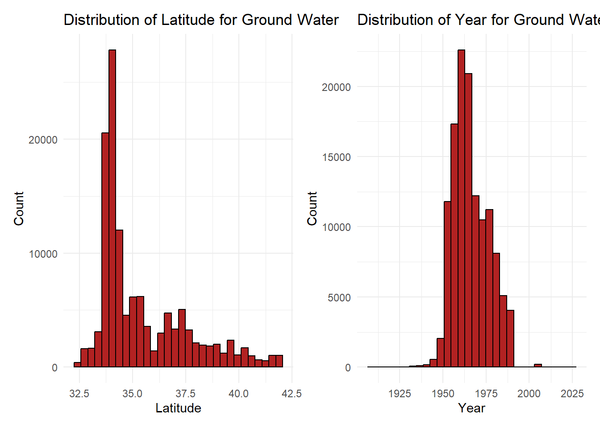
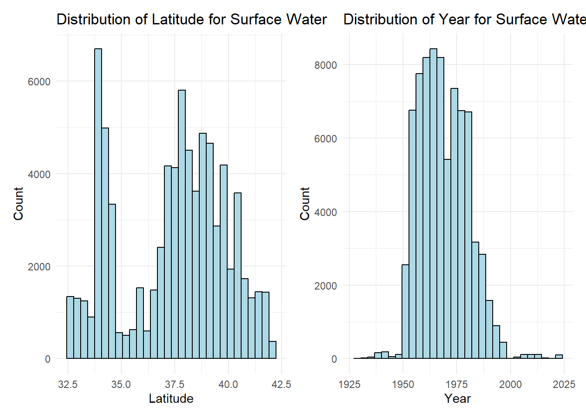
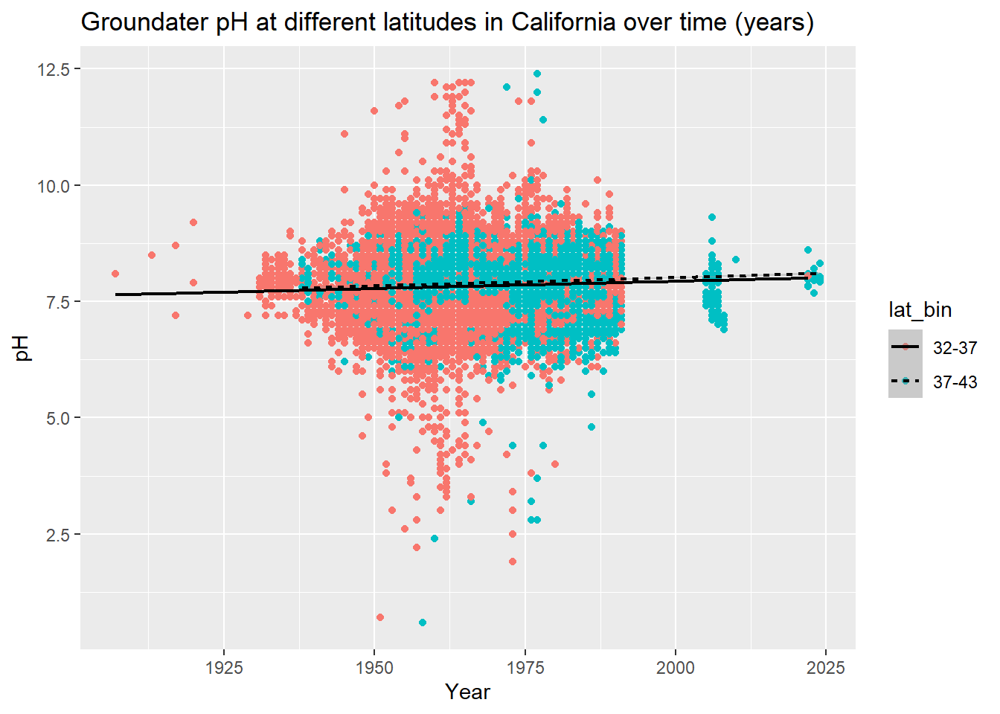
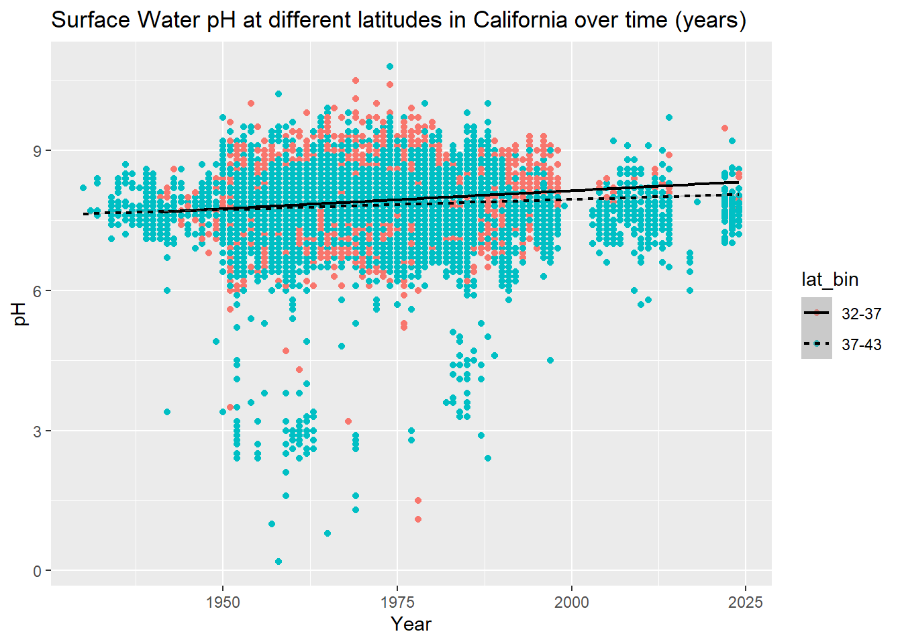

library(tidyverse)
library(here)
library(lubridate)
library(patchwork)
library(sjPlot)
library(broom)How Water Quality pH has Changed Over Time and Space
Author: Tom Gibbens-Matsuyama
This Github Repository contains the rest of my analysis

Image Credits: California Department of Water Resources
Introduction & Background
In this project, I work with data from the California Department of Water Resources (DWR), analyzing data using statistical analysis methods covered in the Master of Environmental Data Science program’s Environmental Data Science (EDS) 222: Statistics for Environmental Data Science course taught by Max Czpanskiy.
Water is a crucial factor for both ecosystems and human use as it is the driving force behind all environmental processes. For this reason, it is important to monitor water quality to estimate the health of ecosystems. One key parameter in water quality assessments is pH level, which measures the acidity or alkalinity content. It has direct effects on the ecosystem as it impacts chemical and biological processes. Change in pH can affect the solubility of nutrients and minerals for organisms, with low pH leading to the release of toxic metals from sediments (Dewangan 2007). Variation in pH does occur naturally, however we are interested in seeing if climate change has had an impact.
Climate change is a phenomenon that has affected many naturally occurring variables worldwide. Unfortunately, it almost always has negative impacts on the environment (Ebi 2018). As we will continue to change our climate through modern practices, it is important to understand the effects of doing so. Through high amounts of carbon dioxide emission, we are directly increasing the average temperature worldwide (IPCC 2021) With increased carbon dioxide concentrations, pH decreases and becomes more acidic (David and Busioc 2017). Already, the EPA stated that Southern California has warmed up about three degrees Fahrenheit over the last century with the rest of state close behind. Not only can global warming have a direct effect on the pH level, but it can also lead to more extreme weather events, causing increased flooding. This flooding can result in spikes of sediment, pathogens, and nutrients in the water, which can degrade water quality by promoting harmful algal blooms, increasing disease risk, and disrupting aquatic ecosystems (Johnson 2022).
For the scope of this project, we will be studying the relationship of pH with time and space in California. Given the knowledge from above, we assume that climate change has had direct and indirect affects leading to a change in pH over time. Spatially, we want to understand if a latitude affects the outcome of pH.
About the Data
Lab Analysis Data
This data from the California Department of Water Resources was found on Data.ca.gov. This is a large data set with observations beginning in January of 1953 and ending in December of 2024. There are 18 columns with over four million observations. The columns that we are interested in are parameter, sample_date, sample_code, result, latitude, station_type, and units.
The variables are defined by the DWR as the following:
parameter: The chemical analyte or physical parameter that was measuredsample_date: The date the sample was collectedsample_code: Unique DWR lab and field data sample coderesult: The measured result of the constituentlatitude: Latitude (NAD83)station_type: General description of sampling site location, i.e., surface water, groundwater, or otherunits: Units of measure for the result
As our dataset is very large, we will need to do some initial filtering in order to run our models.
Load libraries
Load data
lab_water <- read_csv(here("posts", "2024-12-13-water-quality", "data", "lab_results.csv"))For my analysis, I want to run a linear regression model to see the relationship of pH with sample_date and latitude. Before I can run my model or make any preliminary plots, I need to filter the data down a bit. As of now, it is too large and will most likely cause my R to crash.
We are interested in the relationship of these variables in both groundwater and surface water. So, we want to create two new dataframes called ground and surface that represent the data respectively. lab_water will be filtered down to ground and surface using the following code:
Ground and surface water from our Lab Data
Show the code
# Filter to groundwater
ground <- lab_water %>%
filter(parameter == "pH") %>% # Filter for pH
mutate(sample_date = mdy_hm(sample_date)) %>%
mutate(year = as.numeric(format(sample_date, "%Y"))) %>%
filter(station_type == "Groundwater") %>% # Filter to only groundwater
filter(longitude < -50) %>% # Get rid of longitudinal outliers
drop_na(sample_date) %>% # Drop NAs for our dates
mutate(ph = as.numeric(result)) %>%
filter(ph >= 0 & ph <= 14.0) %>%
mutate(lat_bin = cut(latitude, breaks = c(32, 37, 43),
right = FALSE,
labels = c("32-37", "37-43")))
# Filter to surface water
surface <- lab_water %>%
filter(parameter == "pH") %>%
mutate(sample_date = mdy_hm(sample_date)) %>%
mutate(year = as.numeric(format(sample_date, "%Y"))) %>%
filter(station_type == "Surface Water") %>%
drop_na(sample_date) %>%
mutate(ph = as.numeric(result)) %>%
filter(ph >= 0 & ph <= 14.0) %>%
filter(!is.na(latitude)) %>%
mutate(lat_bin = cut(latitude, breaks = c(32, 37, 43),
right = FALSE,
labels = c("32-37", "37-43")))The code above was used to filter our data to ground and surface observations, but it is also doing more than that. It is filtering our parameter to only pH as it is the result that we are interested in. There were also outliers that didn’t make sense within our data that needed to be removed. For example, there were longitudinal outliers that represented observations outside of California. It is surprising to see as this data is supposed to only be observations within California. Likewise, there were outliers within our pH column outside the bounds of 0 to 14 that were removed. I also mutated a new row lat_bin that binned the latitude into a range of 32.0 - 37.0 degrees North and 37.0 - 43.0 degrees North. This binned column will be used to for our analysis.
Preliminary Exploration
Now that we have our data filtered to pH for ground and surface water, let’s take a look at the distribution of our variables. So, let’s plot latitude and year as histograms for both types of water collection. It is important to always plot the data, especially when you have large datasets.
Show the code
ground_latitude_hist <- ggplot(ground, aes(x = latitude)) +
geom_histogram(color = "black",
fill = "firebrick") +
labs(title = "Distribution of Latitude for Ground Water",
x = "Latitude",
y = "Count") +
theme_minimal()
ground_year_hist <- ggplot(ground, aes(x = year)) +
geom_histogram(color = "black",
fill = "firebrick") +
labs(title = "Distribution of Year for Ground Water",
x = "Year",
y = "Count") +
theme_minimal()
ground_latitude_hist + ground_year_hist
Show the code
surface_latitude_hist <- ggplot(surface, aes(latitude)) +
geom_histogram(color = "black",
fill = "lightblue") +
labs(title = "Distribution of Latitude for Surface Water",
x = "Latitude",
y = "Count") +
theme_minimal()
surface_year_hist <- ggplot(surface, aes(year)) +
geom_histogram(color = "black",
fill = "lightblue") +
labs(title = "Distribution of Year for Surface Water",
x = "Year",
y = "Count") +
theme_minimal()
surface_latitude_hist + surface_year_hist
From our histograms, we see that latitude has a strong skew to the the right for our ground water data. There is a strong unimodal peak centered around 34.0 degrees North. This latitude represents observations taken in Southern California, more specifically around Los Angeles, San Bernardino, and Riverside. Having significantly more observations at this latitude is expected as the greater Los Angeles area is densely populated. The histogram containing our year variable is approximately normally distributed with a mean around the 1960s. We know from our metadata that there are observations from 2024, but it is good to keep in mind that the bulk of our data is from 60 years ago.
As for our surface water data, we see that the latitude distribution is different from our ground water. This data is bimodal, with peaks of observations around 34.0 and 38.0 degrees North. Like ground water, we expect to see a lot of observations within the greater Los Angeles area. The second mode peaks at 38.0 degrees North, but has a good range of data within 37.0 to 40.0 degrees North.
Before moving forward with linear regression, it is important to plot each explanatory variable with the response variable to see if there is a linear relationship. In the case here, we are plotting our response variable pH over our explanatory variable year. Instead of using latitude as the second explanatory variable, we will use the binned version lat_bin.
Show the code
# One plot containing both year and latitudinal range
ggplot(ground, aes(x = year, y = ph, colour = lat_bin)) +
geom_point() +
geom_smooth(method = "lm", size = 0.8, aes(linetype = lat_bin), color = "black") +
labs(title = "Groundater pH at different latitudes in California over time (years)",
x = "Year",
y = "pH")
Show the code
# One plot containing both year and latitudinal range
ggplot(surface, aes(x = year, y = ph, colour = lat_bin)) +
geom_point() +
geom_smooth(method = "lm", size = 0.8, aes(linetype = lat_bin), color = "black") +
labs(title = "Surface Water pH at different latitudes in California over time (years)",
x = "Year",
y = "pH") 
For the groundwater plot: Visually, looking at the scatterplot it seems like there may be a linear relationship of year and lat_bin on ph. Both best fit lines are slightly positively sloped, indicating a linear relationship. The two lines also look like they have slightly different slopes, indicating that latitude can contribute to different rates of change.
For the surface water plot: Like the groundwater plot, there is an indication of a linear relationship between the variables. The best fit lines are again, slightly positively sloped.
As we wouldn’t expect to see a huge rate of change in pH over time, as it has logarithmic scaling, a linear regression model looks plausible. Let’s continue forward.
My Hypotheses
Ho: There is no change in surface and groundwater pH over time (years) or across latitude in California
Ha: There is a change in surface and groundwater pH over time (years) or across latitude in California
Analysis
The plan for this analysis is to run a multiple linear regression model. We are interested to see if there is a relationship between our response variable pH and the two explanatory variables year and lat_bin. The two equations below represent our model. The first one is the original formula given two explanatory variables. The second one represents said equation with our variables plugged in for X1, X2, and Y.
\[\large \hat{Y} = \beta_0 + \beta_1 X_1 + \beta_2 X_2 + \epsilon\]
\[ \large \text{pH} = \beta_0 + \beta_1 \cdot \text{year} \ + \beta_2 \cdot \text{lat\_bin} + \epsilon \]
Let’s run the models for both the ground and surface dataframes
Show the code
ground_model <- lm(ph ~ year + lat_bin, data = ground)
ground_model %>%
summary() %>%
tab_model()| ph | |||
| Predictors | Estimates | CI | p |
| (Intercept) | 1.39 | 0.87 – 1.90 | <0.001 |
| year | 0.00 | 0.00 – 0.00 | <0.001 |
| lat_bin37-43 | 0.06 | 0.06 – 0.07 | <0.001 |
| Observations | 126901 | ||
| R2 / R2 adjusted | 0.011 / 0.011 | ||
Model Interpretation:
Coefficients
Intercept: With an intercept coefficient of 1.39, whenyearandlat_bin37-43are 0, the estimated value ofphis 1.39.year: The coefficient is 0.0033, for each increasingyear, ourphincreases by 0.0033 whenlat_bin37-43is 0.lat_bin37-43: The coefficient is 0.064, suggesting that observations inlat_bin37-43have a estimatedphthat is 0.064 units higher than the reference category (lat_bin32_37).
Significance
The p-values for
yearandlat_bin37-43are very small, indicating that they are both statistically significant.Multiple R-squared: The r-squared value of 0.011 is very small, indicating that 1.10% of the variablity in
phis explained byyearandlat_bin37-43.
Interpretation
- The low R-squared value of 0.011 suggests that the model doesn’t explain the variability in our
ph. This means that there are variables not included in the model that explain the outcome of our pH variable.
Now let’s run a linear regression for our Surface Water
Show the code
surface_model <- summary(lm(ph ~ year + lat_bin, data = surface))
surface_model %>%
tab_model()| ph | |||
| Predictors | Estimates | CI | p |
| (Intercept) | -2.83 | -3.41 – -2.25 | <0.001 |
| year | 0.01 | 0.01 – 0.01 | <0.001 |
| lat_bin37-43 | -0.09 | -0.09 – -0.08 | <0.001 |
| Observations | 78100 | ||
| R2 / R2 adjusted | 0.026 / 0.026 | ||
Model Interpretation
Coefficients
Intercept: When bothyearandlat_bin37-43are zero, the estimatedphis -2.83.year: The coefficient is 0.0055, for each increasing year, the estimated value ofphincreases by 0.0055 when latitude is constantlat_bin37-43: The coefficient is -0.087, suggesting that observations inlat_bin37-43have a estimatedphthat is 0.064 units lower than the reference category (lat_in32-37).
Significance
The p-values for all coefficients are very small, indicating that they are all statistically significant.
Multiple R-squared: Multiple R-squared: The r-squared value of 0.026 is very small, indicating that 2.60% of the variablity in
phis explained byyearandlatitude.
Interpretation
The low R-squared value of 0.026 suggests that the model doesn’t explain the variability in our ph. Meaning confounding variables are not included in our model which better explain the outcome of ph.
Conclusion
From this analysis, we can conclude that there isn’t a direct relationship of year and latitude on the ph of ground and surface water. We have statistically significant p-values that suggest there is a relationship between all of our variables, however, small r-squared values contradict this statement. This model has a clear indication of omitted variable bias (OVB).
In the future, additional research can be done with the same dataset. It would be important to include other variables within the model to better represent how pH changes. These variables include, water temperature, aklalinity, CO2 concetrations, turbidity, and more. It would be interesting to include these variables alongside year and latitude to assess if they still contain small p-values.
References
David, I., Busuioic, G. 2017. Assessment of interaction between pH and different forms of CO2 from naturally underground water used for drinking in Gorgota. Annals. Food Science and Technology. (18): 13-26.
Dewangan, S.K., Shrivastava, S.K., Tigga, V., Lakra, M. 2007. Review paper on the role of pH in water quality implications for aquatic life, human health, and environmental sustainability. International Advanced Research Journal in Science, Engineering and Technology. (10): 215-218. doi: 10.17148/IARJSET.2023.10633
Ebi, K.L., J.M. Balbus, G. Luber, A. Bole, A. Crimmins, G. Glass, S. Saha, M.M. Shimamoto, J. Trtanj & J.L. White-Newsome. 2018. Human health. In: Impacts, risks, and adaptation in the United States: Fourth national climate assessment, volume II [Reidmiller, D.R., C.W. Avery, D.R. Easterling, K.E. Kunkel, K.L.M. Lewis, T.K. Maycock, and B.C. Stewart (eds.)]. U.S. Global Change Research Program, Washington, DC, pp. 544, 551–552. doi: 10.7930/NCA4.2018.CH14
IPCC (Intergovernmental Panel on Climate Change). 2021. Climate change 2021: The physical science basis. Working Group I contribution to the IPCC Sixth Assessment Report. Cambridge, United Kingdom: Cambridge University Press. www.ipcc.ch/assessment-report/ar6
Johnson T, Butcher J, Santell S, Schwartz S, Julius S, LeDuc S. 2022. A review of climate change effects on practices for mitigating water quality impacts. J Water Clim Chang. 2022 Mar 22;13:1684-1705. doi: 10.2166/wcc.2022.363.